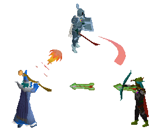

Wilderness Teams let up to 6 players officially party together in the Wilderness, with anti-friendly-fire, and a recruitment board.
The Wilderness has always been built around solo players and large clans. There is almost nothing in between. Wilderness Teams fills that gap, giving small groups of 2 to 6 players a structured way to engage with Wilderness content together without needing to be part of a clan or already knowing the people they're playing with.
The core principle is enforced trust. The anti-friendly-fire rule means your teammates cannot betray you in combat, removing the single biggest reason players refuse to team with strangers in the Wilderness.

- 6 corresponds to the combat triangle x2 - two of each combat style, which is a natural ceiling for a balanced small group.
- If unlimited, clans would abuse it to prevent friendly fire en-masse, or players could make a "safe Wilderness" by putting everyone on the same world in one mega-team.
- 6 players is roughly the upper limit a solo player can realistically escape from if they know what they are doing and are sufficiently leveled, keeping it risky, but not impossible.
- It encourages intelligent team composition. Will you bring 6 PvMers? 6 PKers? A mix? A lunars support with 2 ancients? Maybe someone will find a new meta?
- The 5-player variant (independently proposed by u/Danil445) is also viable.
- Wilderness boss drops split between 10 players, making two teams of 5 a clean fit.
- The recent Deadman: All Stars also featured teams of 5s.
- Group Ironman Mode also maxes out as a 5-member gamemode.
- Theatre of Blood also maxes out at 5 player teams.
- Barbarian Assault is played in teams of 5.
- Team members cannot attack each other, including multi-target attacks like Ancient Magicks. Full anti-friendly-fire.
- Teams have a dedicated team chat separate from friends chat and clan chat.
- A recruitment board near Edgeville, the Ferox Enclave, and Mage Bank lets players advertise their team, similar to the POH advertisement board. It advertises across all worlds and includes a quick-hop button.
- You can only manually leave or be kicked from a team while in a safe zone, preventing 5 players from luring a 6th and un-teaming mid-Wilderness for a kill.
- Proximity Rule: The Team Leader is the "Anchor Player". You are automatically removed from the team if you go farther than 1.5x a render distance from the Anchor. If the Anchor dies, the next player in the list becomes the Anchor.
- At stairs, ladders, dungeon entrances, and teleport levers, the proximity distance is counted from the point of entry, and ignores vertical elevation.
- Teams are capped at 6 players. Any player wanting a larger group should join a clan instead.
I've identified 2 major potential ways that Wildy Teams could be used to scam and lure players... that is if I didn't already catch them and safeguard against them.
1. Anti-Friendly-Fire prevents the members of your team of perfect strangers from killing each other.
Without it, you could team up with randoms, but what is going to stop them from just killing you, or you killing them?
2. Let's say you have a group of you and 8 of your friends (9 players).
You form a team of 3, between you, a friend, and a wealthy stranger.
Your other 6 friends form a second team and "organically" encounter your team of 3 in the Wilderness.
The 6 friends then kill the wealthy stranger while your team of 3 pretends to fight back. The wealthy stranger loses their bank. You and your friends walk away with a nice split.
The thing that prevents this type of scam is Blessed Status.
If you are not able or willing to trust a team of strangers, you can choose to only join a "Blessed Team", thus ensuring that it's impossible for them to team up and kill you for your items.
They CAN still run this kind of scam for your Blessed death fee, which is just gold, but that's a significantly less worthwhile scam unless you are willing to enter the Wilderness in something like a max set with a team of strangers.
Anything further than that cannot really be prevented imo, as likely anything else someone could do to lure or scam you is something that can already be done today and isn't a problem exclusive to Wildy Teams.
But if you can think of any such scams, exploits, or lures, I would love to hear your feedback so we can iterate on the idea more.
 Solo PvMers
Solo PvMersCan now team up with complete strangers safely. Being 1 of 6 targets reduces your individual chance of being singled out. You are no longer alone in a hostile environment.
 PKers
PKersMore players in the Wilderness means more activity. Small PKing teams finally have an official system. There used to be singles teams before the PJ timer change. This brings that back.
 New Players
New PlayersCan team up with more experienced players who are incentivised to teach them, because a better-performing teammate helps the whole team. Real apprenticeship through actual gameplay.
 Clans
ClansClans can advertise through the recruitment board. Clan members can sub-divide into teams of 6 and benefit from anti-friendly-fire within their sub-teams. A great recruitment pipeline for new members.
 Friend Groups
Friend GroupsAlready have 2-6 friends you want to PK or boss with? This system is perfect for you exactly as described. Anti-friendly-fire just makes it official and reliable.
 Jagex
JagexTurns toxic clan territory behaviour into legitimate gameplay with rules. Gives Jagex a social infrastructure to build future Wilderness content around. Mostly uses existing systems. Lower dev cost than a new boss or area.
If you are alone in the Wilderness, you are targeted 100% of the time when a PKer finds you. If you have one teammate, that drops to 50%. With 5 teammates it is ~17%.
Wilderness Teams reduces individual risk not by changing the rules of engagement, but by dividing it across more players. The Wilderness becomes less hostile not because it gets safer, but because you are no longer the only target.
This kind of “benefit” can be done without Wilderness Teams.
Any PvM or skilling activity that encourages and benefits players to farm together would definitely be a good design.
Like if a boss rewards you with better gp/h for killing it with more players, that creates the possibility of players emergently and cooperatively farming it together.
Most bosses in the game punish you for killing them with a friend because then whoever does more damage gets to steal the drop or if the drop is split based on damage then, someone is going to consistently get less gold over time.
Like Royal Titans for example feel this way. I did those with a friend of mines that was maxed, and although we killed them a lot faster than I do solo, my friend was really stealing most of the drop potential.
I wasn’t really sure if it was really profiting me any better than doing it solo.
If we apply this to the Wilderness, it would have to be genuinely better for everyone to where if someone appears out of nowhere and starts helping you kill that boss, you know that it’s also earning you more gold no matter what.
You won't know if this guy who comes up to you just wants to kill you, or if they will spontaneously team up with you.
But the possibility that they might be friendly in the Wilderness would make for a possible positive experience for players to form a sort of temporary impromptu alliance.
Then when an actual PKer shows up or even a small team of PKers shows up, they’re going to have to choose between 5 or 6 people to target. And maybe your impromptu alliance could fight back and try to save you.
But anyway my point is, there is sort of an underlying ingredient here that encouraging cooperative designs would probably be great for the Wilderness.
And Wildy Teams would be the most simple and most universal way to encourage that.